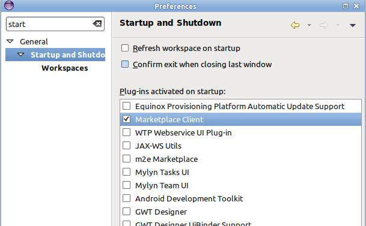
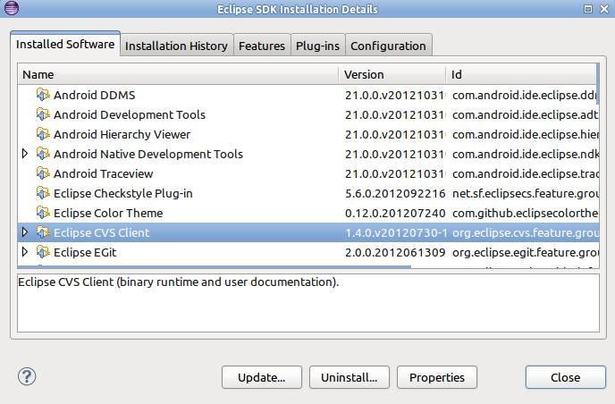
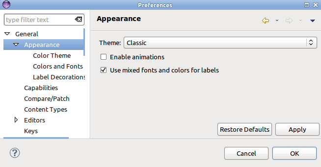
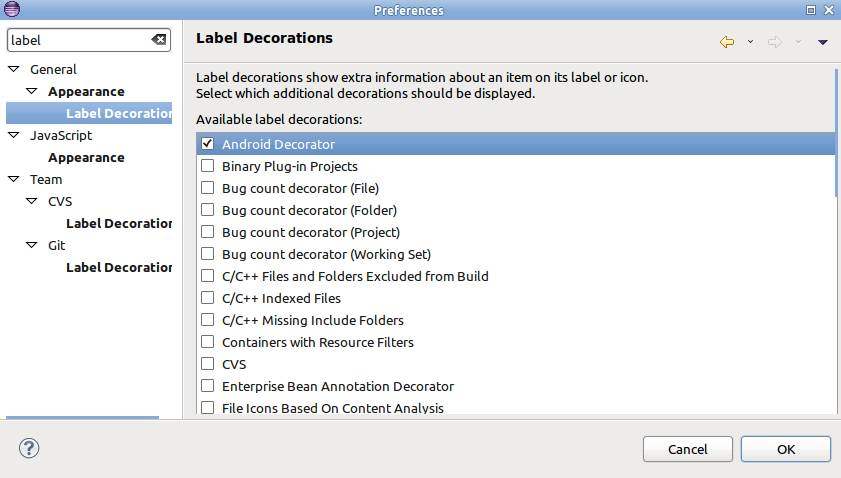
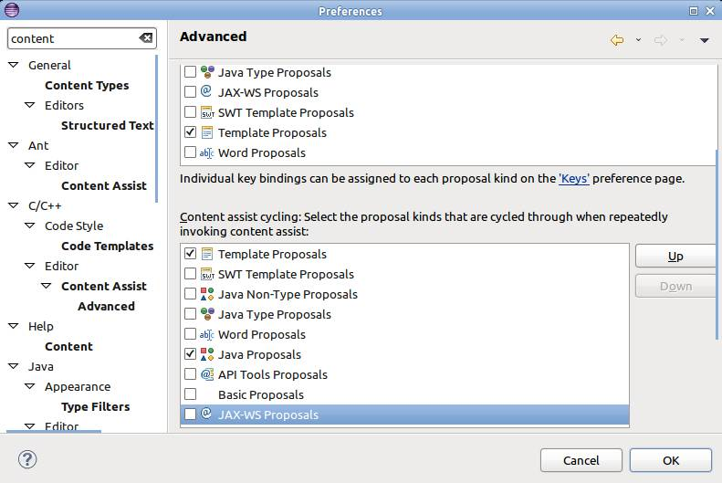
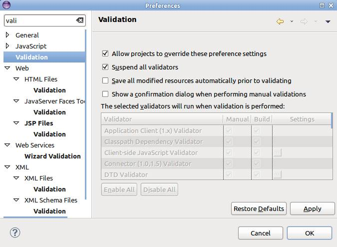
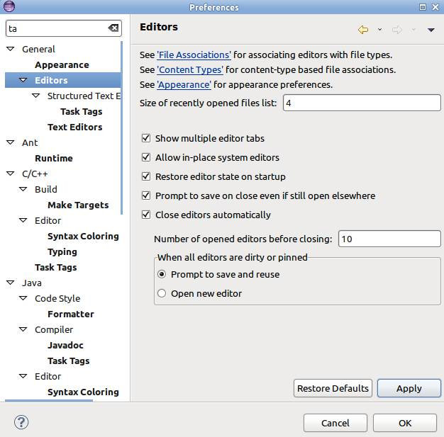

你是否经常在等待eclipse的一些操作完成？
如果你看到这里，说明答案是yes。如果你苦于eclipse中响应很慢的功能，并且想给eclipse提速让开发更舒服些，就请看看下面的内容。
注意：可能一般人都建议加大内存。如果可以，你可以买个cpu好点的机器。弄个SSD让你的文件操作更快。
我们假设你买不起这些，你所能做的就是启动eclipse实例，所有ubuntu的设置都是基于eclipse 4.3.0版本，build id:I20121031-2000，当然其他平台的版本的设置都差不多。
当我第一次找到强大的插件时，我非常高兴。我安装的越来越多后，eclipse就用起来不舒服了。所以你可以从众多的插件中禁用一些不常用的插件，禁用不代表删除，你仍然可以启用他们。
Window -> Preferences -> General -> Startup and Shutdown

禁用不常用的eclipse启动插件
一些插件可能在尝试体验时用一用，但是后来可能在也不用了，这种情况可以把它删掉。
Help -> About Eclipse SDK -> Instalation Details -> <Select plugin> -> Uninstall

卸载eclipse插件
下面的优化都需要修改eclipse所在目录下的eclipse.ini文件。
给eclipse执行jvm。它可以让你使用自己的jdk，而不是系统环境变量所指定的jdk
-vm
/path/to/your/java
使用最新的jdk来运行eclipse。使用最新的jdk要好很多。
使用sun的jdk来运行ecipse。原因同上。
配置jvm虚拟机的启动参数。你可以自定义虚拟机参数，如果你觉得他们更合适（虚拟机参数介绍）。我使用下面的启动参数来增加堆的大小至768Mb，perm区设置为256Mb（内存总大小为3Gb）
-vmargs
-Xms768m
-Xmx768m
-XX:PermSize=256m
-XX:MaxPermSize=256m
你可以添加-Xverify:none参数来跳过jvm对class文件的校验，以此提升eclipse的启动速度，但这是很不安全的。
你还可以通过测试不同的垃圾回收器策略、server参数来测试eclipse的性能差异。以下为实验过程中使用的部分参数：
-server
-XX:+UnlockExperimentalVMOptions
-XX:+UseG1GC
-XX:+UseParallelGC
-XX:+UseFastAccessorMethods
-Xss2m
可以在这里查看所有的eclipse运行时参数，选择适合你的参数。
动画很酷，但如果可以的话，我总是在所有的工具中禁用动画。所以classic主题是我最常用的主题。
Window -> Preferences -> General -> Appearance -> Uncheck 'Enable animations'

设置eclipse主题
label decoration是项目、文件、类层级上的小图标，它可以有益于显性化文件的状态。比如：文件是否已经提交到git。很多插件都提供了这个功能，但很少有用。你可以仅留下你想要的，其他的禁用。
Window -> Preferences -> General -> Appearance -> Label Decorations

设置label decoration
有时在性能较差的机器上，或者当你有很多类的时，自动补全功能性能就会很差。一个很小的优化是减少自动补全的proposal。我仅保留了Java Proposals和Template Proposals：
Window -> Preferences -> Java -> Editor -> Content Assist -> Advanced

eclipse Content Assist，eclipse自动补全设置
如果你对自己的技术很自信，就可以暂停所有的校验器。就算出现问题，你也可以靠自己的能力定位问题，节省了你的开发时间。
Window -> Preferences -> Validation -> Suspend All Validators

取消eclipse校验器
如果你仅开发部分eclipse中的工程，那你最好把其他功能关闭掉。他们不会出现在eclipse索引中。
你可以在workspace中手动关闭不相关的工程（Close unrelated projects）。但我推荐使用Working Set，你可以添加多个工程到一个Working Set中，这样就可以快速的在Working Set件切换。
Right Click on Project -> Assign Working Sets..
编辑中太多的tab会导致eclipse性能下降，可以这样控制下tab的个数：
Window -> Preferences -> General -> Editors
勾选 Close editors automatically 并设置 Number of opened tabs 为10。

控制eclipse编辑器中tab的个数
你还是个程序员吗？我觉得没有任何理由需要拼写检查功能。取消这个功能吧：
Window -> Preferences -> General -> Editors -> Text Editors -> Spelling -> Uncheck 'Enable spell checking'
如果你在意什么时候build你的工程，可以这样设置：
Project -> Uncheck 'Build Automatically'
Window -> Preferences -> Java -> Compiler -> Building -> Uncheck 'Scrub output folders when cleaning'
Window -> Preferences -> Java -> Compiler -> Building -> Uncheck 'Rebuild class files modified by others'
仁者见仁，智者见智。就算你用超快的IDE功能，但如果你要花10个动作才能实现一个操作，那你的开发过程就不算快。
把你最常用的动作配置成快捷键，并记住他们，几周的使用后，你的开发效率将由显著提升。
Windows -> Preferences -> General -> Keys
为了逼着自己使用所有的快捷键，我直接把工具栏给禁用了。
Window -> Hide Toolbar
转载自戎马一生
英文：http://mishadoff.com/blog/eclipse-speedup/
译文：：http://rongmayisheng.com/post/eclipse全面提速
译者：weager

![]()